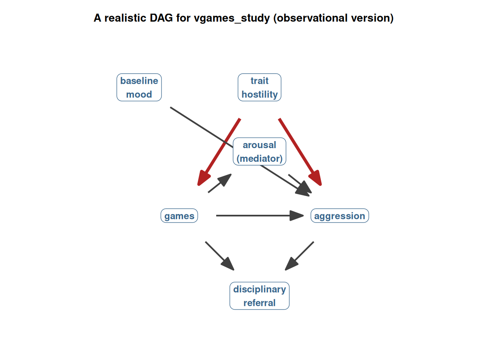
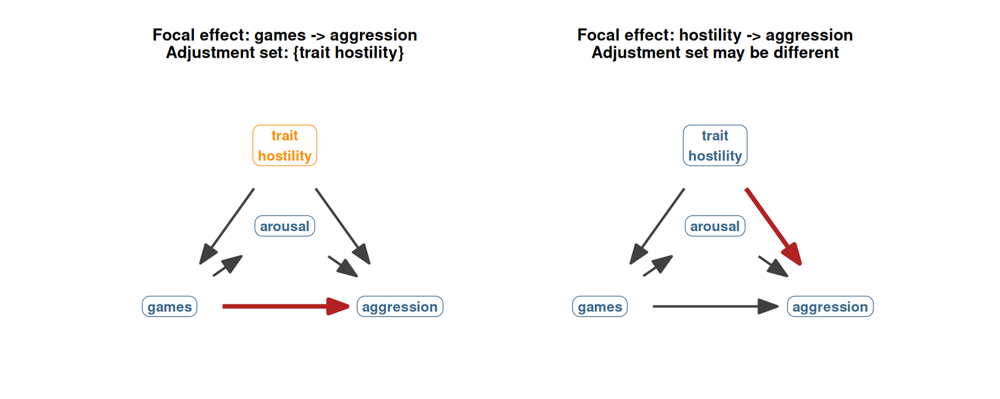

44 The backdoor criterion: what ‘controlling for’ actually does
We are now ready to put the pieces together. Chapters 39 to 41 established the conceptual framework (counterfactuals, potential outcomes, the role of randomization). Chapter 42 introduced the DAG as the language for drawing causal assumptions. Chapter 43 named the three roles a third variable can play (confounder, mediator, collider) and described what controlling for each one does to the focal causal estimate.
This chapter does three things. First, it states the backdoor criterion, the procedural rule for choosing the right set of control variables given a DAG. Second, it applies the rule to a realistic vgames_study DAG. Third, it discusses the practical consequences for how to read multiple regression output, including the widely encountered Table 2 fallacy. The chapter closes with the most important message of Section 6: statistical control requires causal justification.
By the end of this chapter, you should be able to look at any multiple regression that claims a causal effect, ask which DAG the authors appear to be assuming, evaluate whether the right variables are being controlled, and recognize whether each coefficient in the table is or is not licensed as a causal estimate.
44.1 The backdoor criterion in plain language
We can now state the rule for choosing a control set, in the version most useful for psychology research:
The backdoor criterion (plain-language version). To estimate the causal effect of X on Y from observational data, choose a set of variables to control for that:
- Blocks every backdoor path between X and Y (closes all the spurious common-cause routes).
- Does not include any mediator of the X → Y relationship (does not close any part of the causal path you are trying to measure).
- Does not include any collider (or descendant of a collider) on a path between X and Y (does not open a path that was closed).
A simpler slogan, worth memorizing because it captures the whole thing:
Block the backdoors. Leave the mediators alone. Do not open the colliders.
If you can find a set of measured variables that satisfies these conditions, then the regression of Y on X controlling for that set estimates the causal effect of X on Y. If you cannot (for example, because a critical confounder was never measured), then no amount of statistical control can recover the causal effect, and you should be honest in your reporting that the estimate is descriptive rather than causal.
This is the precise sense in which Wysocki, Lawson, and Rhemtulla (2022) say statistical control requires causal justification. The backdoor criterion is stated entirely in terms of the causal structure (the DAG). You cannot check it against the data alone. You check it against your causal assumptions.
44.2 A worked example on vgames_study
Let us put this into practice on a moderately realistic DAG for the vgames_study situation. Imagine we have observational data: participants have chosen which game to play themselves, and we have measurements of several other variables that might be relevant. Our focal causal question is the effect of the violent game (compared to the neutral game) on the aggression score afterwards.
Five third variables, each playing one of the roles from Chapter 43:
- Trait hostility (H). Confounder. Causes both games and aggression (the red arrows). Opens a backdoor path games ← hostility → aggression.
- Arousal (M). Mediator. Lies on the causal path games → arousal → aggression. Part of the mechanism by which the game affects aggression.
- Baseline mood (B). Cause of Y only. Affects aggression but not the game choice.
- School disciplinary referral (R). Collider. Caused by both games and aggression. The path games → referral ← aggression is naturally closed.
We want to estimate the games → aggression arrow. To do this, we apply the backdoor criterion to choose the right adjustment set.
44.2.1 Step 1. List the backdoor paths
A backdoor path is one that starts with an arrow pointing into the focal predictor (here, games) and reaches the outcome by any route. In this DAG, the backdoor paths from games to aggression are:
- games ← trait hostility → aggression. Open by default (hostility is a fork between games and aggression).
That is the only backdoor path here. The path games → arousal → aggression is a forward causal path (no arrow into games), not a backdoor. The path games → referral ← aggression starts with an arrow out of games to referral, and the collider at referral closes the path naturally.
44.2.2 Step 2. Identify the adjustment set
We need to block the one open backdoor path (through trait hostility) without including the mediator (arousal) and without including the collider (referral).
- Should we include trait hostility? Yes. It is a confounder, and including it blocks the backdoor path.
- Should we include arousal? No. It is a mediator on the causal path we are trying to measure. Including it would close part of the games → aggression path and reduce our estimate of the total effect.
- Should we include baseline mood? Optional. It is a cause of Y only, so leaving it out causes no bias. Including it improves precision (reduces the residual variance of the outcome) without changing the focal causal estimate.
- Should we include school disciplinary referral? No. It is a collider. Including it would open a path that is currently closed, manufacturing a spurious association between games and aggression that does not exist in the population.
So the adjustment set is trait hostility (and optionally baseline mood for precision).
44.2.3 Step 3. Run the regression
In R, the regression we want is:
vgames <- read.csv("data/vgames_study.csv")# Adjustment set: trait_hostility (confounder).
# Do NOT include arousal (mediator) or school disciplinary referral (collider).
fit_backdoor <- lm(aggression ~ condition + trait_hostility,
data = vgames)
summary(fit_backdoor)$coefficients Estimate Std. Error t value Pr(>|t|)
(Intercept) 2.0205389 0.4281935 4.718751 6.628211e-06
conditionviolent 1.5707272 0.2417978 6.496037 2.094535e-09
trait_hostility 0.6066805 0.1089654 5.567645 1.668509e-07Under the DAG we drew, the coefficient on conditionviolent in this regression is licensed as an estimate of the causal effect of playing the violent game on aggression. We are not licensing the coefficient on trait_hostility as a causal effect; that one is a separate question, requiring its own DAG and its own adjustment set (see the Table 2 fallacy below).
A few important notes about what we did not do:
- We did not include arousal. Including it would close the games → arousal → aggression path and reduce our estimate of the total causal effect.
- We did not include school disciplinary referral. Including it would open the collider path and produce a spurious downward bias.
- We did not include “everything” to be safe. The naive “more controls is more conservative” instinct is wrong; some controls (mediators, colliders) actively bias the estimate.
This is the whole procedure. Draw the DAG, list the backdoor paths, choose an adjustment set that closes them without violating the mediator and collider rules, fit the regression. The rest of the statistical machinery (the standard errors, the confidence intervals, the p-values from Section 4) operates as usual on top of this causal scaffolding.
44.3 “Control for everything” is actively harmful
A common instinct, especially in psychology, is to add as many control variables as possible to a regression, on the theory that more controls is more conservative. Section 6 should now have convinced you that this instinct is wrong. Adding the wrong control variables can:
- Remove part of the real effect, if the variable is a mediator on the causal path. The coefficient on the focal predictor shrinks because you have subtracted off part of the mechanism.
- Create a fake effect, if the variable is a collider. The coefficient on the focal predictor appears even when there is no true causal effect, because controlling the collider opens a spurious path.
- Amplify residual bias, if the variable is a cause of X only. The coefficient on the focal predictor can become more biased rather than less, in the presence of unmeasured confounders.
The general principle is: more control is not more rigor. Thoughtful, causally justified control is rigor. Adding a covariate to your regression is a substantive causal claim, and it should be defended on causal grounds.
In practice, this means that the choice of covariates in your regression is one of the most important decisions you make. It is more important than the choice of statistical procedure, more important than the choice of significance threshold, and arguably more important than the sample size. The wrong covariates can turn a clean study into a biased one; the right covariates can rescue a complicated situation. Spend more time on the DAG than on the syntax.
44.4 The Table 2 fallacy
A practical consequence of the backdoor criterion is that a single multiple regression cannot deliver causal estimates for all of its coefficients at once. The adjustment set that correctly de-confounds the games → aggression effect (in our example, just trait hostility) is generally the wrong adjustment set for the trait_hostility → aggression effect, or the empathy → aggression effect, or any other coefficient in the same regression.
This is widely known as the Table 2 fallacy, after Westreich and Greenland’s (2013) paper of the same name (Table 2 referring to the conventional location of the regression results table in epidemiology papers). The fallacy is to look at a multiple regression output and interpret every coefficient as a causal effect of that variable on the outcome, when in fact at most one of them can be a causal effect (the one for the focal predictor), and only if its adjustment set was chosen correctly.
Concretely: if we want the causal effect of games on aggression, we draw the DAG with games as the focal predictor and choose an adjustment set accordingly. If we want the causal effect of trait hostility on aggression, we draw a different DAG with trait hostility as the focal predictor. The adjustment sets in general differ. Mediators on the games → aggression path may not be mediators on the trait hostility → aggression path. Confounders that bias the games → aggression estimate may not bias the trait hostility → aggression estimate, and vice versa.

In the left panel, we want the causal effect of games on aggression. Trait hostility (boxed) is the confounder we control for. In the right panel, we want the causal effect of trait hostility on aggression. Now trait hostility is the focal predictor, not a control. The adjustment set might still happen to be empty (if no confounders of the hostility → aggression relationship are present in the DAG), but it could just as easily include variables we did not need for the games question.
The practical takeaway: report at most one causal coefficient per regression. The other coefficients in the output describe statistical relationships in the data but should not be interpreted as causal effects without a separate analysis of their own DAGs and adjustment sets. Westreich and Greenland recommend that researchers run separate regressions for separate causal claims, each with its own adjustment set, rather than trying to extract many causal claims from one regression.
This is a meaningful change from how regression tables are conventionally read. The standard reading is “Table 2 shows that A, B, and C all predict the outcome; here are the effects.” The causal-inference reading is “Table 2 shows the result of one regression with this adjustment set; the focal predictor here is A, and we are claiming the coefficient on A is causal; the other coefficients are descriptive.” If you want causal claims for B and C, you need separate analyses.
44.5 What this section has prepared you for
Section 6 has taught you the conceptual scaffolding for causal inference. You now know:
- That statistics by itself does not deliver causal claims; design and reasoning do (Chapter 39).
- That the potential outcomes framework gives us the formal language for what a causal effect is (Chapter 40).
- That random assignment is the cleanest licensing mechanism, and it makes the observed group mean difference an unbiased estimate of the ATE (Chapter 41).
- That DAGs are the tool for drawing causal assumptions, with paths and elementary structures as the basic vocabulary (Chapter 42).
- That third variables come in three classic roles, with three opposite rules (control confounders, leave mediators alone, do not control colliders) and three real consequences when the rules are violated (Chapter 43).
- That the backdoor criterion ties it all together into a procedural rule for choosing the right control set (this chapter).
What you have not yet been taught is the more elaborate set of methods that are sometimes needed when the simple backdoor procedure is not enough. These include propensity score methods (matching, weighting), instrumental variables, regression discontinuity designs, difference-in-differences, doubly robust estimation, and various sensitivity analyses for assessing how much unmeasured confounding would change a conclusion. All of these are extensions of the framework you now have. They rest on the same logic of potential outcomes, the same conceptual role for DAGs, the same set of structural constraints. They are not separate tools; they are refinements of the same tool, designed to handle situations where straightforward adjustment is impractical or unreliable.
The introduction to these refined methods is the subject of a later section. The reason they are deferred is that they only make sense once the foundational framework is in place. With the framework in place, the methods become natural extensions; without it, they look like a grab bag of statistical tricks. Section 6 has been the foundation.
44.6 A final note on humility
Observational causal inference is harder and less certain than randomized experiments, for one main reason: you can never be sure you have measured and controlled for all the confounders. There may always be an unmeasured common cause lurking. DAGs do not remove this uncertainty. They make your assumptions explicit, so that you and your readers can see them, challenge them, and test their consequences. Transparency, rather than false certainty, is the goal.
This connects directly to the open-science principles from Section 4 (pre-registration, full reporting, two-roles separation): state your assumptions, make them checkable, do not claim more than your design and reasoning support. The DAG is the natural pre-registration object for the causal structure: by publishing the DAG you assumed, you let your reader evaluate the adjustment set, propose alternative DAGs, and assess sensitivity to plausible alternatives.
Randomized experiments and well-justified observational analyses are two routes to the same goal: an association that equals a causal effect. Experiments get there by design; observational studies get there by causal assumptions made explicit in a DAG. Neither route is cost-free, but both are honest about their assumptions, and both are far better than a hidden mixture of “I controlled for some variables, the coefficient is significant, therefore the effect is causal.” Section 6 has been about replacing that hidden mixture with the explicit framework you now have.
44.7 Check your understanding
1. What does the backdoor criterion say about how to choose control variables for estimating a causal effect from observational data?
2. What happens if a critical confounder of the focal causal relationship has not been measured in the data?
3. What is the Table 2 fallacy and why is it a problem?
4. Why is the strategy of “include as many covariates as possible” not actually a safe strategy?
5. What is the role of DAGs in the broader project of transparent and rigorous causal inference?
44.8 References
Hernán, M. A., & Robins, J. M. (2020). Causal inference: What if. Chapman & Hall/CRC. https://www.hsph.harvard.edu/miguel-hernan/causal-inference-book/
Pearl, J. (1995). Causal diagrams for empirical research. Biometrika, 82(4), 669-688. https://doi.org/10.2307/2337329
Rohrer, J. M. (2018). Thinking clearly about correlations and causation: Graphical causal models for observational data. Advances in Methods and Practices in Psychological Science, 1(1), 27-42. https://doi.org/10.1177/2515245917745629
Westreich, D., & Greenland, S. (2013). The Table 2 fallacy: Presenting and interpreting confounder and modifier coefficients. American Journal of Epidemiology, 177(4), 292-298. https://doi.org/10.1093/aje/kws412
Wysocki, A. C., Lawson, K. M., & Rhemtulla, M. (2022). Statistical control requires causal justification. Advances in Methods and Practices in Psychological Science, 5(2). https://doi.org/10.1177/25152459221095823